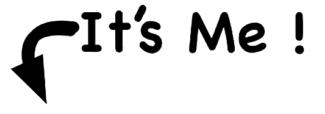

Biography
I studied French Literature at the University of Jordan 2016-2020.I'm 22 years old I live in Amman.I speak English, French, Turkish and Arabic I am excited to explore more at software development and I hope i will keep improving. I have intrest in programming


- Parasite 2019
- knives out 2019
- Mission impossible-Fallout 2018
- Harry Potter and The Deatly Hallows
- Get Out 2017
- The Lord of the Rings: The Return of the King
- Interstellar (2014)
- The Intouchables (2011)
- Toy Story (1995)
- There Will Be Blood (2007)
Top Ten Movies:
- graduated from the University of Jordan 2020(French literature)
- Finished high school in 2015 (Food Processing)